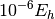

Notes on Options¶
Note
The options referred to in the Theoretical Methods: SCF to FCI section below
and indexed in Keywords by Module are placed in set blocks as
described in Job Control Keywords, not as arguments to a Python function
(like energy()).
Note
All Psi4 keyword names and values are insensitive to case, both
those that are placed in set blocks and as Python function arguments.
The few exceptions are documented for the database() function,
where case structure must match the database file.
Note
Boolean options can be specified by yes, on, true, or 1
for affirmative and no, off, false, or 0 for negative,
all insensitive to case.
Note
Certain convergence and tolerance keywords, of type double (real numbers),
may be specified using either a real number or an integer; and integer X is then
treated as the number of converged decimal digits required. For example, to request
as energy converged to , the user may set the e_convergence
keyword to 0.000001, 1.0e-6, or 6.
Alternate Implementations¶
Depending on the reference (RHF, UHF, ROHF) and the integral treatment (conventional CONV, density-fitted DF, and Cholesky-decomposed CD), computational methods are sometimes implemented by multiple coders or even multiple times. Psi4 transparently selects the most efficient implementation, so one generally needn’t consult this table. However, to understand the details of what combinations are accessible or what alternate implementations are available, read on.
Below, “Y” means method available in module, “D” means module is default for that method, and “” means method not available. HF, DFT, and MP2 default to density-fitted integrals, while all higher methods default to conventional integrals. Therefore, for a closed-shell molecule:
runs MP2 with default
DFwith default implementation DFMP2energy('mp2')
runs MP2 with
CONVwith default implementation OCCset mp2_type conv energy('mp2')runs MP2 with default
DFwith implementation OCCset qc_module occ energy('mp2')
name _ type select [1] |
_ |
energy() |
gradient() |
||||||||||||||||
|---|---|---|---|---|---|---|---|---|---|---|---|---|---|---|---|---|---|---|---|
| RHF | UHF | ROHF | RHF | UHF | ROHF | ||||||||||||||
| CV | DF | CD | CV | DF | CD | CV | DF | CD | CV | DF | CD | CV | DF | CD | CV | DF | CD | ||
mp2 |
CCENERGY | ||||||||||||||||||
| DETCI | Y | Y | |||||||||||||||||
| DFMP2 | D [2] | D [2] | D | D | |||||||||||||||
| FNOCC | Y | ||||||||||||||||||
| OCC | D | Y | D | D | Y | Y | D | Y | D | D | Y | D | D | ||||||
mp3 |
CCENERGY | ||||||||||||||||||
| DETCI | Y | Y [3] | |||||||||||||||||
| DFMP2 | |||||||||||||||||||
| FNOCC | Y | ||||||||||||||||||
| OCC | D | D | D | D | D | D | D | D | D | D | |||||||||
mp2.5 |
CCENERGY | ||||||||||||||||||
| DETCI | |||||||||||||||||||
| DFMP2 | |||||||||||||||||||
| FNOCC | |||||||||||||||||||
| OCC | D | D | D | D | D | D | D | D | D | D | |||||||||
mp4 |
CCENERGY | ||||||||||||||||||
| DETCI | Y | Y [3] | |||||||||||||||||
| DFMP2 | |||||||||||||||||||
| FNOCC | D | ||||||||||||||||||
| OCC | |||||||||||||||||||
lccd |
CCENERGY | ||||||||||||||||||
| DETCI | |||||||||||||||||||
| DFMP2 | |||||||||||||||||||
| FNOCC | D | ||||||||||||||||||
| OCC | Y | D | D | D | D | D | D | D | D | D | |||||||||
lccsd, cepa(0) |
CCENERGY | ||||||||||||||||||
| DETCI | |||||||||||||||||||
| DFMP2 | |||||||||||||||||||
| FNOCC | D | ||||||||||||||||||
| OCC | |||||||||||||||||||
ccsd |
CCENERGY | D | D | D | D | D | D | ||||||||||||
| DETCI | Y | Y | |||||||||||||||||
| DFMP2 | |||||||||||||||||||
| FNOCC | Y | D | D | ||||||||||||||||
| OCC | Y | Y | D | ||||||||||||||||
ccsd(t) |
CCENERGY | D | D | D | D | ||||||||||||||
| DETCI | |||||||||||||||||||
| DFMP2 | |||||||||||||||||||
| FNOCC | Y | D | D | ||||||||||||||||
| OCC | Y | Y | |||||||||||||||||
ccsd(at) |
CCENERGY | D | |||||||||||||||||
| DETCI | |||||||||||||||||||
| DFMP2 | |||||||||||||||||||
| FNOCC | |||||||||||||||||||
| OCC | D | D | |||||||||||||||||
cisd |
CCENERGY | ||||||||||||||||||
| DETCI | Y | D | |||||||||||||||||
| DFMP2 | |||||||||||||||||||
| FNOCC | D | ||||||||||||||||||
| OCC | |||||||||||||||||||
Footnotes
| [1] | Algorithm type selection keyword below. Values to the right: conventional CONV (here abbreviated CV), density-fitted DF, and Cholesky-decomposed CD. |
| [2] | (1, 2) Also available for KS reference. |
| [3] | (1, 2) Conditions have no default module (computationally inefficient) and can only be accessed by specifying QC_MODULE. |